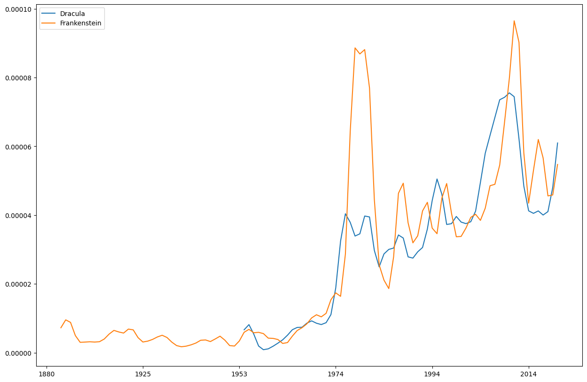

dhlab class demo#
import dhlab as dh
Corpus#
dh.Corpus??
Init signature:
dh.Corpus(
doctype=None,
author=None,
freetext=None,
fulltext=None,
from_year=None,
to_year=None,
from_timestamp=None,
to_timestamp=None,
title=None,
ddk=None,
subject=None,
lang=None,
limit=10,
order_by='random',
)
korpus = dh.Corpus(doctype="digibok", title="Dracula")
korpus.frame.iloc[:5, [0,1,2,3,9]]
| dhlabid | urn | title | authors | year | |
|---|---|---|---|---|---|
| 0 | 100547952 | URN:NBN:no-nb_digibok_2011071108102 | Dracula | Stoker , Bram / Carling , Bjørn | 2006 |
| 1 | 100359518 | URN:NBN:no-nb_digibok_2017122268008 | Dracula : av Lars Saabye Christensen : fritt e... | Christensen , Lars Saabye / Stoker , Bram | 2000 |
| 2 | 100205172 | URN:NBN:no-nb_digibok_2014052008098 | Dracula | Stoker , Bram / Carling , Bjørn | 2002 |
| 3 | 100462841 | URN:NBN:no-nb_digibok_2008090904123 | Dracula | Fletcher-Watson , Jo / Kolstad , Henning / Bac... | 1998 |
| 4 | 100219857 | URN:NBN:no-nb_digibok_2014071506008 | Dracula | Stoker , Bram / Carling , Bjørn | 1980 |
Conkordans#
dh.Concordance??
dh.Concordance(corpus=None, query=None, window=20, limit=500)
korpus.conc("Dracula").show()
| link | concordance | |
|---|---|---|
| 228 | URN:NBN:no-nb_digibok_2014052008098 | DRACULA I |
| 11 | URN:NBN:no-nb_digibok_2014052008098 | DRACULA I |
| 471 | URN:NBN:no-nb_digibok_2011071108102 | DRACULA |
| 278 | URN:NBN:no-nb_digibok_2011071108102 | DRACULA |
| 422 | URN:NBN:no-nb_digibok_2014071506008 | Arminius sier at Dracula ' ene var en stor og ansett ætt , seiv om det nå og da var noen... |
| 270 | URN:NBN:no-nb_digibok_2014052008098 | DRACULA I |
| 434 | URN:NBN:no-nb_digibok_2014052008098 | DRACULA I |
| 165 | URN:NBN:no-nb_digibok_2014052008098 | Dracula ( 1931 , am. , regi Tod Browning ; Bela Lugosi som Dracula ) |
| 472 | URN:NBN:no-nb_digibok_2011071108102 | DRACULA |
| 142 | URN:NBN:no-nb_digibok_2011071108102 | DRACULA |
Frekvens#
dh.Counts??
dh.Counts(corpus=None, words=None)
korpus.count().display_names()
| Dracula | Dracula : fritt etter Bram Stokers roman | Dracula | Dracula | Dracula | Dracula | Dracula | Zlatan , Dracula , tannfeen ... og jeg | |
|---|---|---|---|---|---|---|---|---|
| . | 646.0 | 3268.0 | 8099.0 | 8495.0 | 8162.0 | 8459.0 | 30.0 | 982.0 |
| , | 500.0 | 1384.0 | 9574.0 | 9133.0 | 9611.0 | 9636.0 | 23.0 | 745.0 |
| og | 288.0 | 524.0 | 6287.0 | 6206.0 | 6312.0 | 6326.0 | 17.0 | 648.0 |
| i | 265.0 | 449.0 | 3035.0 | 2137.0 | 2509.0 | 3066.0 | 16.0 | 431.0 |
| ^ | 154.0 | 0.0 | 0.0 | 0.0 | 0.0 | 0.0 | 0.0 | 6.0 |
| ... | ... | ... | ... | ... | ... | ... | ... | ... |
| Tobbe | 0.0 | 0.0 | 0.0 | 0.0 | 0.0 | 0.0 | 0.0 | 8.0 |
| pensjonist | 0.0 | 0.0 | 0.0 | 0.0 | 0.0 | 0.0 | 0.0 | 9.0 |
| syttitallet | 0.0 | 0.0 | 0.0 | 0.0 | 0.0 | 0.0 | 0.0 | 9.0 |
| ‘ | 0.0 | 0.0 | 0.0 | 0.0 | 0.0 | 0.0 | 0.0 | 15.0 |
| ’ | 0.0 | 0.0 | 0.0 | 0.0 | 0.0 | 0.0 | 0.0 | 25.0 |
21733 rows × 8 columns
#
from dhlab import totals
tot = totals()
tot.freq
. 7655423257
, 5052171514
i 2531262027
og 2520268056
- 1314451583
...
tidspunkter 110667
dirigenter 110660
ondartet 110652
kulturtilbud 110652
trassig 110651
Name: freq, Length: 50000, dtype: int64
(korpus.coll("Dracula").frame.counts / tot.freq).sort_values(ascending=False).to_frame().head(10)
| 0 | |
|---|---|
| Dracula | 0.000271 |
| grev | 0.000093 |
| tyrkerne | 0.000037 |
| Grev | 0.000037 |
| uverdige | 0.000034 |
| brit | 0.000034 |
| vedlagte | 0.000033 |
| hungersnød | 0.000033 |
| Reeves | 0.000031 |
| Ladies | 0.000027 |
Ngram#
??dh.Ngram
dh.Ngram(
words=None,
from_year=None,
to_year=None,
doctype='bok',
mode='relative',
lang='nob',
**kwargs,
)
dh.Ngram(["Dracula", "Frankenstein"], from_year=1880, to_year=2020)
